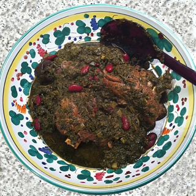

Ghormeh Sabzi Recipe

The Best Stew To Pair With Jasmin Rice
Ghormeh Sabzi [gore-meh sab-zee] is a classic persian stew that is widely popular all throughout Iran.
The dish is commonly served on top of rice along with other sides such as yogurt and salad. Growing up
this was my absolute favorite stew and it has never disappointed me!
Ingredients
- Herbs: parsley, cilantro, and fenugreek
- Meat: lamb chunks or beef stew meat
- Beans: pinto, kidney, or black eyed peas
- Persian dried limes
Preperation
- If using dried kidney beans, soak them in water for 3-8 hours.
- Wash your herbs and dry them thoroughly. Finely chop the herbs and set them aside.
- Heat vegetable oil in a large pan until hot and then saute the herbs for 15 minutes, until they are darker in color and aromatic. Turn the heat off and set the herbs aside.
- Heat more vegetable oil in a large pot and saute the onions until golden brown. Add in your meat and turmeric. Cook for 5-7 minutes, stirring occasionally until the lab in seared on all sides.
- Add your water to the pot and bring it to a simmer. Rinse yur soaked beans and add them tothe pot. Cover and cook for 30 minutes.
- Then add the sauteed herbs to the pot. Cover and cook for 1.5 hours, until the lamb and beans are fully cooked.
- Pierce the dried limes with a fork and add them to the stew. Season with salt and pepper and then cover and cook for another 15 minutes.
- Serve with warm rice of your choice.